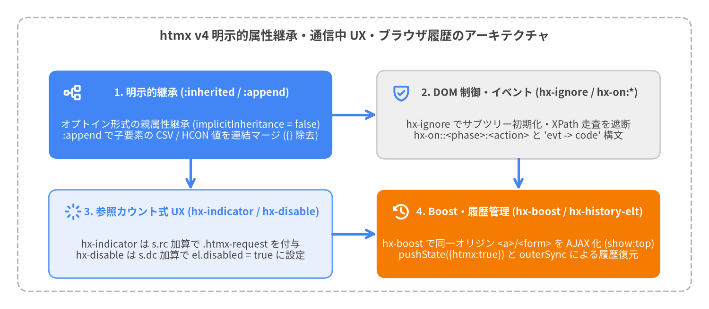

UX・履歴・イベント・継承制御属性
htmx v4 は、プログレッシブエンハンスメント、ブラウザ履歴の復元、通信中のローディング状態管理、信頼できないコンテンツの分離、インラインイベントスクリプト、および DOM ツリー上の属性継承の仕組みを刷新しています。特に htmx v4 では、:inherited と :append によって**属性継承がデフォルトで明示的（オプトイン）**になり、htmx 2 の hx-disabled-elt が hx-disable に改名され、旧 hx-disable がサブツリー無害化用の hx-ignore に変更され、localStorage 履歴スナップショットが hx-history-elt によるネットワークベースの outerSync 復元に置き換えられました。
| 属性・モディファイア | カテゴリ | 値の形式 | htmx 2 での対応機能 | 主な動作 |
|---|---|---|---|---|
hx-boost |
ナビゲーション・UX | "true" | "false" | HCON |
hx-boost（暗黙継承） |
同一オリジンの <a href> と <form> を AJAX リクエストへ段階的に拡張します（デフォルトで target:body, push:'true', show:'top'）。 |
hx-push-url |
ブラウザ履歴 | "true" | "false" | URL パス |
hx-push-url |
スワップ時に history.pushState({htmx: true}, '', path) でブラウザ履歴に新しいエントリを追加します。 |
hx-replace-url |
ブラウザ履歴 | "true" | "false" | URL パス |
hx-replace-url |
スワップ時に history.replaceState({htmx: true}, '', path) で現在のブラウザ履歴エントリを置換します。 |
hx-history-elt |
ブラウザ履歴 | 真偽値・マーカー属性 | hx-history-elt |
戻る・進むナビゲーション時に document.body の代わりに outerSync で復元するコンテナ要素を指定します。 |
hx-indicator |
通信中 UX | CSS / 拡張セレクタ | hx-indicator |
リクエスト通信中に一致要素へ htmx.config.requestClass（htmx-request）を参照カウント（s.rc）付きで付与します。 |
hx-disable |
通信中 UX | CSS / 拡張セレクタ | hx-disabled-elt |
リクエスト通信中に一致するフォームコントロールの .disabled = true を参照カウント（s.dc）付きで設定します。 |
hx-ignore |
セキュリティ制御 | 真偽値・マーカー属性 | hx-disable |
要素とその子孫サブツリー全体に対する htmx の属性走査・初期化・hx-on:* バインドを完全に停止します。 |
hx-on:* |
インラインスクリプト | JS コード / 矢印構文 | hx-on:* |
DOM イベント（hx-on:click）、htmx イベント（hx-on::after:swap）、または複数ハンドラ（hx-on="... -> ..."）を非同期関数としてバインドします。 |
:inherited |
属性継承 | 属性名モディファイア | (デフォルトで暗黙継承) | 親要素の属性を子孫要素へ明示的に継承させます（例: hx-target:inherited="#main"）。 |
:append |
属性継承 | 属性名モディファイア | (htmx 4 で新設) | 親から継承した属性値に対して、子要素のカンマ区切り値や HCON 値を上書きではなく追記マージします（例: hx-include:append="#extra"）。 |

Source Code
from drawlib.canvas import save, setup
from drawlib.icons import phosphor
from drawlib.lines import line
from drawlib.shapes import rectangle
from drawlib.styles import Styles
from drawlib.text import text
setup(width=160, height=70, dpi=150)
# Outer container frame
rectangle((80, 35), width=152, height=62, style=Styles.MutedDashed.patch(shape_r=2.5))
text(
(80, 62.0),
"htmx v4 明示的属性継承・通信中 UX・ブラウザ履歴のアーキテクチャ",
style=Styles.DarkBold.patch(text_size=12.5),
)
x_left = 43.0
x_right = 117.0
y_top = 44.0
y_bot = 17.0
card_w = 64.0
card_h = 20.0
# 1. Explicit Inheritance (Top-Left, Focal Point 1)
rectangle((x_left, y_top), width=card_w, height=card_h, style=Styles.PrimaryFlat.patch(shape_r=2.0))
phosphor.tree_structure((x_left - 26.5, y_top + 5.0), width=4.4, style=Styles.WhiteBold)
text((x_left + 2.5, y_top + 5.0), "1. 明示的継承 (:inherited / :append)", style=Styles.WhiteBold.patch(text_size=10.5))
text(
(x_left, y_top - 3.5),
"オプトイン形式の親属性継承 (implicitInheritance = false)\n:append で子要素の CSV / HCON 値を連結マージ ({} 除去)",
style=Styles.White.patch(text_size=10.0),
)
# 2. Subtree Security & Inline Events (Top-Right, Neutral)
rectangle((x_right, y_top), width=card_w, height=card_h, style=Styles.Neutral.patch(shape_r=2.0))
phosphor.shield_check((x_right - 26.5, y_top + 5.0), width=4.4, style=Styles.PrimaryBold)
text((x_right + 2.5, y_top + 5.0), "2. DOM 制御・イベント (hx-ignore / hx-on:*)", style=Styles.DarkBold.patch(text_size=10.5))
text(
(x_right, y_top - 3.5),
"hx-ignore でサブツリー初期化・XPath 走査を遮断\nhx-on::<phase>:<action> と 'evt -> code' 構文",
style=Styles.Dark.patch(text_size=10.0),
)
# 3. In-Flight UX State (Bottom-Left, PrimaryNeutral)
rectangle((x_left, y_bot), width=card_w, height=card_h, style=Styles.PrimaryNeutral.patch(shape_r=2.0))
phosphor.spinner((x_left - 26.5, y_bot + 5.0), width=4.4, style=Styles.PrimaryBold)
text((x_left + 2.5, y_bot + 5.0), "3. 参照カウント式 UX (hx-indicator / hx-disable)", style=Styles.PrimaryBold.patch(text_size=10.5))
text(
(x_left, y_bot - 3.5),
"hx-indicator は s.rc 加算で .htmx-request を付与\nhx-disable は s.dc 加算で el.disabled = true に設定",
style=Styles.Dark.patch(text_size=10.0),
)
# 4. Boost & Browser History (Bottom-Right, Focal Point 2)
rectangle((x_right, y_bot), width=card_w, height=card_h, style=Styles.AccentFlat.patch(shape_r=2.0))
phosphor.clock_counter_clockwise((x_right - 26.5, y_bot + 5.0), width=4.4, style=Styles.WhiteBold)
text((x_right + 2.5, y_bot + 5.0), "4. Boost・履歴管理 (hx-boost / hx-history-elt)", style=Styles.WhiteBold.patch(text_size=10.5))
text(
(x_right, y_bot - 3.5),
"hx-boost で同一オリジン <a>/<form> を AJAX 化 (show:top)\npushState({htmx:true}) と outerSync による履歴復元",
style=Styles.White.patch(text_size=10.0),
)
# Connecting arrows
line((x_left + 32.0, y_top), (x_right - 32.0, y_top), arrow_head="->", style=Styles.PrimaryBold)
line((x_left, y_top - 10.0), (x_left, y_bot + 10.0), arrow_head="->", style=Styles.PrimaryBold)
line((x_right, y_top - 10.0), (x_right, y_bot + 10.0), arrow_head="->", style=Styles.PrimaryBold)
line((x_left + 32.0, y_bot), (x_right - 32.0, y_bot), arrow_head="->", style=Styles.PrimaryBold)
save()
ナビゲーション・ブラウザ履歴属性#
hx-boost#
個別の hx-get や hx-post 属性を記述することなく、標準の HTML <a href="..."> リンクと <form> 要素を AJAX リクエストへと段階的に拡張（プログレッシブエンハンスメント）します。htmx v4 では、"true" / "false" に加えて、リクエストコンテキスト ctx（swap, target, select, push, replace, transition）へ直接マージされる HCON 設定文字列を指定できます。また、htmx v4 では属性継承が明示的であるため、<body> や <nav> などの親コンテナに配置する場合は :inherited モディファイア（hx-boost:inherited="true"）が必須です。
構文・シグネチャ
<!-- :inherited によりコンテナ内のすべての同一オリジンリンクとフォームを Boost -->
<nav hx-boost:inherited="true">
<a href="/dashboard">Dashboard</a>
<a href="/reports">Reports</a>
</nav>
<!-- HCON でスワップ方式やターゲットを一括オーバーライドして Boost -->
<main hx-boost:inherited="swap:outerMorph, target:#app-shell, select:#app-shell">
<a href="/settings">Account Settings</a>
</main>
対象判定ルールとデフォルトのコンテキスト設定
| 項目 | src/htmx.js におけるルール・デフォルト値 |
詳細仕様 |
|---|---|---|
対象となる <a> 要素 |
tagName === "A" |
target="" または target="_self" であり、download 属性を持たず、href が # 始まり（ページ内リンク）ではなく、__isSameOrigin(elt.href) を満たす場合のみ有効化されます。 |
対象となる <form> 要素 |
tagName === "FORM" |
method !== "dialog" であり、__isSameOrigin(elt.action) を満たす場合に有効化されます。送信ボタンの formAction / formmethod 属性も優先解釈されます。 |
デフォルトの ctx.target |
document.body |
明示的な hx-target または HCON の target: が指定されていない場合、__resolveTarget() で document.body に解決されます。 |
| デフォルトの履歴動作 | push = "true" |
__resolveHistoryAction() において、push も replace も未指定の Boost 要素は自動的に最終レスポンス URL（response.raw.url || ctx.request.action）を履歴に push します。 |
| デフォルトのスクロール | swapSpec.show ||= "top" |
__processMainSwap() において、他の show モディファイアが指定されていない限りターゲット先頭へスクロールします。 |
| 修飾キー付きクリック | バイパス (__isModifierKeyClick) |
Ctrl、Meta（Cmd）、または Shift キーを押しながらリンクをクリックした場合は htmx が介入せず、ブラウザ標準の新しいタブ・ウィンドウ起動が動作します。 |
| リクエストヘッダ | HX-Boosted: true |
__createCoreHeaders() で ctx.request.headers に自動付与されます。 |
実践的な使用例
<!-- アプリケーション全体の Boost 有効化と特定リンクの個別オプトアウト -->
<body hx-boost:inherited="true">
<header>
<a href="/projects">Projects</a>
<!-- 特定のリンクのみ Boost を無効化 -->
<a href="/legacy-app" hx-boost="false">Legacy Portal</a>
</header>
<form action="/search" method="get">
<input type="search" name="q">
<button type="submit">Search</button>
</form>
</body>
hx-push-url#
htmx.swap() 内のコンテンツ挿入直前に、ブラウザのセッション履歴スタックへ新しい URL エントリを追加します（history.pushState({htmx: true}, '', path)）。
構文・シグネチャ
<!-- リクエスト/レスポンスの URL を自動的に履歴へ push -->
<button hx-get="/tabs/activity" hx-target="#tab-pane" hx-push-url="true">
Activity
</button>
<!-- 任意のカスタム URL パスを履歴へ push -->
<button hx-post="/filters/apply" hx-target="#results" hx-push-url="/catalog?filtered=1">
Apply Filters
</button>
設定値と履歴更新ライフサイクル
| 設定値 | 解決される path |
内部動作 (__resolveHistoryAction & __handleHistoryUpdate) |
|---|---|---|
"true" |
url.pathname + url.search + (#anchor) |
ctx.response?.raw?.url || ctx.request.action（サーバー側の HTTP 3xx リダイレクト後の URL を自動追従）に #anchor フラグメントを結合したパスを使用します。 |
"false" |
null（履歴更新なし） |
URL の push を抑止します（hx-boost や親から継承した hx-push-url:inherited="true" を打ち消す際に有効）。 |
| カスタム URL 文字列 | 指定した文字列（例: "/items/42"） |
指定された相対パスまたは URL で history.pushState({htmx: true}, '', path) を呼び出します。 |
| 初期エントリの刻印 | history.replaceState({htmx: true}, '', location.href) |
初回ページ読み込み後の最初の htmx 履歴更新時に、初期ページの履歴ステートにも {htmx: true} を刻印し、「戻る」操作で初期ページへ戻った際にもインターセプト可能にします。 |
| ライフサイクルイベント | htmx:before:history:update -> htmx:after:history:push -> htmx:after:history:update |
document 上で発火します。htmx:before:history:update で evt.preventDefault() を呼ぶと履歴更新をキャンセルできます。 |
| レスポンスヘッダ優先 | HX-Push-Url / HX-Replace-Url が優先 |
サーバーが HX-Push-Url または HX-Replace-Url ヘッダを返した場合、hx-push-url 属性よりも優先されます。 |
実践的な使用例
<!-- タブバー全体で URL push を継承しつつ、更新ボタンのみ履歴追加を無効化 -->
<div role="tablist" hx-target:inherited="#panel" hx-push-url:inherited="true">
<button hx-get="/orgs/overview">Overview</button>
<button hx-get="/orgs/members">Members</button>
<button hx-get="/orgs/refresh" hx-push-url="false">Refresh Panel</button>
</div>
<section id="panel"></section>
hx-replace-url#
戻るボタンの新しい履歴ステップを増やすことなく、htmx.swap() 実行中にブラウザの現在のセッション履歴エントリを置換します（history.replaceState({htmx: true}, '', path)）。
構文・シグネチャ
<!-- 戻る履歴を汚染せずにライブ検索のクエリパラメータを URL バーへ同期 -->
<input type="search" name="q"
hx-get="/products"
hx-trigger="input changed delay:300ms"
hx-target="#product-grid"
hx-replace-url="true">
設定値と動作仕様
| 設定値 | 解決される path |
内部動作 (__resolveHistoryAction) |
|---|---|---|
"true" |
url.pathname + url.search + (#anchor) |
解決されたリクエスト・レスポンス URL（response.raw.url || ctx.request.action）で現在の URL を置換します。 |
"false" |
null（履歴更新なし） |
URL 置換を無効化します（親の hx-replace-url:inherited を打ち消す際に使用）。 |
| カスタム URL 文字列 | 指定した文字列（例: "/wizard?step=2"） |
history.replaceState({htmx: true}, '', path) を実行し、document 上で htmx:after:history:replace と htmx:after:history:update を発火します。 |
hx-push-url との優先関係 |
let type = push ? 'push' : 'replace' |
push と replace の両方が指定された場合は push が優先されます。一方、Boost された要素に hx-replace-url="true" を指定すると、Boost のデフォルト push = 'true' の代わりに replace が実行されます。 |
実践的な使用例
<!-- 履歴スタックを増やさずに URL バーのステップ番号を更新するマルチステップウィザード -->
<form hx-post="/onboarding/step-2"
hx-target="#wizard-box"
hx-replace-url="/onboarding?step=2">
<input type="text" name="company" required>
<button type="submit">Continue</button>
</form>
hx-history-elt#
ブラウザの戻る・進むナビゲーション（Navigation API の navigate イベントまたは popstate イベント）による履歴復元時に、htmx がスワップ対象とするメインコンテナ要素を指定します。localStorage に DOM スナップショットを保存していた htmx 2 とは異なり、htmx v4 コアは HX-History-Restore-Request: true ヘッダ付きの GET リクエストを再発行し（またはオプションの hx-history-cache 拡張機能に委譲し）、[hx-history-elt] 要素を outerSync で更新します。
構文・シグネチャ
<body>
<aside id="persistent-sidebar">...</aside>
<!-- 戻る・進む操作時、#app-workspace のみが抽出され outerSync で復元される -->
<main id="app-workspace" hx-history-elt>
<h1>Current View</h1>
</main>
</body>
履歴復元メカニクス (__restoreHistory)
| 項目 | デフォルト（hx-history-elt なし） |
hx-history-elt 指定時 |
|---|---|---|
解決される historyElt |
document.body |
document.querySelector('[hx-history-elt],[data-hx-history-elt]') に一致する最初の要素。 |
復元時の swap 方式 |
outerSync |
outerSync（historyElt 自体を DOM に残したまま属性を同期し、子要素を入れ替えます）。 |
復元時の select 抽出 |
undefined（body 全体） |
"[hx-history-elt],[data-hx-history-elt]" — サーバーのレスポンスから [hx-history-elt] 部分木のみを抽出します。 |
| 連続操作時の Abort | this.#historyAbort?.abort() |
戻る・進むボタンが素早く連続押下された場合、進行中の復元リクエストを自動的に abort してから次のリクエストを発行します。 |
| リロードモード | htmx.config.history = "reload" |
AJAX 復元の代わりに location.reload() でページ全体を再読み込みします。 |
実践的な使用例
<!-- 音声プレイヤーとナビゲーションバーを維持したままメイン領域のみ履歴復元 -->
<body>
<audio id="podcast-player" src="/ep1.mp3" controls></audio>
<nav hx-boost:inherited="true" hx-target:inherited="#page-shell" hx-select:inherited="#page-shell">
<a href="/episodes/1">Episode 1</a>
<a href="/episodes/2">Episode 2</a>
</nav>
<div id="page-shell" hx-history-elt>
<!-- 戻る・進む操作時はここのみが復元される -->
</div>
</body>
通信中 UX・セキュリティ・インラインスクリプト#
hx-indicator#
リクエストの確認（htmx:confirm）が完了してからネットワーク通信が終了するまでの間、htmx.config.requestClass（デフォルトは "htmx-request"）を付与する要素を指定します。htmx はデフォルトで .htmx-indicator を非表示（opacity:0; visibility:hidden）にし、自身または親要素に .htmx-request が付いた際に表示（opacity:1; visibility:visible; transition: opacity 200ms ease-in）するスタイルシート（this.indicatorStyleSheet）を自動注入します。
構文・シグネチャ
<button hx-post="/reports/generate" hx-indicator="#gen-spinner, closest .card">
Generate Report
</button>
<span id="gen-spinner" class="htmx-indicator">Building PDF...</span>
セレクタ仕様と参照カウント管理 (__showIndicators / __hideIndicators)
| 機能 | src/htmx.js における動作 |
詳細仕様 |
|---|---|---|
| 省略時のデフォルト対象 | [ctx.sourceElement] |
hx-indicator を省略した場合、ctx.sourceElement 自身（document.body を除く）に htmx-request が付与されるため、ボタンやフォーム内部の .htmx-indicator 子要素は自動的に表示されます。 |
| 拡張セレクタ対応 | __findAllExt(elt, hxIndicator, "hx-indicator") |
標準 CSS セレクタ、カンマ区切りリスト、closest <sel>, find <sel>, findAll <sel>, next [<sel>], previous [<sel>], this, global <sel> をサポートします。 |
参照カウント (s.rc) |
s.rc = (s.rc || 0) + 1 |
indicator._htmx_state.rc で進行中リクエスト数をカウントします。複数の並列リクエストが同じインジケータを共有していても、finally で --s.rc <= 0 になるまで .htmx-request は維持されます。 |
| リダイレクト時の維持 | ctx.keepIndicators = true |
レスポンスが HX-Refresh、HX-Redirect、または HX-Location を発火した場合、遷移が完了するまでインジケータ表示を維持します。 |
実践的な使用例
<!-- CSS の transition-delay を活用し、200ms 未満の高速レスポンスではスピナーのチラつきを防止 -->
<style>
.htmx-request .delayed-spinner,
.htmx-request.delayed-spinner {
transition: opacity 200ms ease-in 200ms;
}
</style>
<form hx-post="/checkout" hx-indicator="find .delayed-spinner">
<button type="submit">Pay Now</button>
<span class="htmx-indicator delayed-spinner">Processing payment...</span>
</form>
hx-disable#
リクエストが通信中の間、指定したフォームコントロールや対話要素の DOM プロパティ .disabled = true を設定して二重送信を防止します。htmx 2 の hx-disabled-elt から改名されました（htmx 2 の旧 hx-disable は hx-ignore に改名されています）。
構文・シグネチャ
<!-- 通信中にトリガーボタン自身を無効化 -->
<button hx-post="/orders/submit" hx-disable="this">
Place Order
</button>
<!-- フォーム送信中にフォーム内の全ボタン・入力・セレクトボックスを無効化 -->
<form hx-post="/settings" hx-disable="findAll button, findAll input, findAll select">
<input type="text" name="org_name">
<button type="submit">Save Changes</button>
</form>
セレクタ仕様と参照カウント管理 (__disableElements / __enableElements)
| 機能 | src/htmx.js における動作 |
詳細仕様 |
|---|---|---|
| デフォルト対象 | なし（明示指定が必要） | hx-indicator とは異なり、hx-disable を省略しても要素は自動無効化されません。トリガー要素自身を無効化するには hx-disable="this" を指定します。 |
| 拡張セレクタ対応 | __findAllExt(elt, hxDisable, "hx-disable") |
this, closest <sel>, find <sel>, findAll <sel>, next [<sel>], previous [<sel>] および標準 CSS セレクタに対応します（先頭1件のみの find button と全件対象の findAll button の違いに注意してください）。 |
参照カウント (s.dc) |
s.dc = (s.dc || 0) + 1 |
htmx:confirm 完了後に el._htmx_state.dc を加算して el.disabled = true を設定します。finally ブロックで --s.dc <= 0 になった時点でのみ el.disabled = false に戻します。 |
| フォーム値収集との順序 | __collectFormData() の後に実行 |
フォームデータの収集が完了した後の __issueRequest() 内で無効化されるため、hx-disable で <input> や <button type="submit"> を無効化しても送信パラメータから値が欠落することはありません。 |
実践的な使用例
<!-- ツールバー内の全アクションボタンで通信中の自己無効化を継承 -->
<div class="toolbar" hx-disable:inherited="this">
<button hx-post="/jobs/backup">Run Backup</button>
<button hx-post="/jobs/vacuum">Vacuum Database</button>
</div>
hx-ignore#
要素およびそのすべての子孫要素に対して、htmx による属性走査、初期化、および hx-on:* イベントリスナーの登録を完全に停止します（__ignore(elt) が elt.closest('[hx-ignore],[data-hx-ignore]') != null を判定）。フォーム要素の無効化（hx-disable）との混同を避けるため、htmx 2 の hx-disable から改名されました。
[!IMPORTANT] ユーザー投稿コメント、リッチテキスト記事、メールプレビューなど、信頼できない（Untrusted）HTML をレンダリングするコンテナには必ず
hx-ignore（またはdata-hx-ignore）を付与し、注入されたhx-on:*,hx-get,hx-vals="js:..."属性による Stored XSS を防止してください。
構文・シグネチャ
<article class="user-comment" hx-ignore>
<!-- このサブツリー内のいかなる hx-* / data-hx-* 属性も完全に無視される -->
<p hx-get="/admin/delete" hx-trigger="load" hx-on:click="stealSession()">
Untrusted user comment content
</p>
</article>
保護スコープと内部動作 (__ignore & process)
| フェーズ・機能 | [hx-ignore] 内部での動作 |
|---|---|
htmx.process(root) |
htmx:before:process を発火する前に process() の先頭で即座に return します。 |
hx-on XPath スキャン |
#hxOnQuery で検出された各ノードに対し、htmx:before:on:init 発火やリスナー登録の前に if (!this.__ignore(hxOnNode)) で除外します。 |
| アクション・Boost 初期化 | __shouldInitialize(elt) が !this.__ignore(elt) を検証し、hx-get/hx-post/hx-boost の初期化を阻止します。 |
| セカンダリプレフィックス | hx-ignore に加え、htmx.config.prefix（デフォルト "data-hx-" による data-hx-ignore）も同様に認識します。 |
実践的な使用例
<!-- htmx ボタンとユーザー投稿 HTML を同一カード内で安全に共存させるパターン -->
<div class="profile-card">
<button hx-post="/users/42/follow" hx-swap="outerHTML">Follow</button>
<div class="bio-content" hx-ignore>
<!-- サーバーで出力されたユーザー HTML を htmx の処理対象から隔離 -->
{{ user.bio_html }}
</div>
</div>
hx-on:*#
htmx のトリガー指定エンジン（once, delay, throttle, from, target, prevent, stop, halt, [filter]）をフル活用して、要素にインライン JavaScript イベントリスナーを登録します。htmx v4 ではハンドラは非同期関数（AsyncFunction）として実行され、this が要素に束縛され、引数 event に加えて with(event?.detail || {}) がスコープに展開されます。
構文・シグネチャ
<!-- 1. 標準またはカスタム DOM イベント: hx-on:<event> -->
<button hx-on:click="this.classList.toggle('active')">Toggle</button>
<!-- 2. htmx ライフサイクルイベントの二重コロン省略記法: hx-on::<phase>:<action> -->
<form hx-post="/comments"
hx-on::after:request="if (ctx.response.status === 200) this.reset()">
<textarea name="body" required></textarea>
<button type="submit">Post</button>
</form>
<!-- 3. トリガーモディファイア付きの複数ハンドラ矢印構文: hx-on="..." -->
<input type="text"
hx-on="focus once -> find('#hint').hidden = false;
keydown[key=='Escape'] halt -> this.value = ''">
ハンドラ記述形式と実行スコープ (__handleHxOnAttributes)
| 形式・スコープ変数 | 構文・識別子 | src/htmx.js における動作 |
|---|---|---|
DOM イベント (hx-on:<event>) |
hx-on:mouseenter=".." |
<event> を直接リッスンします（HTML パーサーの仕様により属性名は小文字化されます）。 |
htmx 省略記法 (hx-on::<event>) |
hx-on::config:request=".." |
先頭の ::（または htmx.config.metaCharacter 2文字）を htmx:<event>（例: htmx:config:request, htmx:after:swap）へ展開します。 |
複数ハンドラ構文 (hx-on="...") |
hx-on="<triggerSpec> -> <code>; <triggerSpec2> -> <code2>" |
;(?=[^;]*->) で分割し、-> の左辺を __onTrigger() に渡すため、click once delay:200ms from:document -> ... のような完全なトリガーモディファイアが利用可能です。 |
this と event |
this, event |
this は hx-on を持つ要素自身、event は発火した Event / CustomEvent インスタンスです。 |
event.detail の自動展開 |
ctx, task, error, issueRequest |
ハンドラコードが with(event?.detail||{}){...} でラップされるため、event.detail.ctx と書かずに直接 ctx 等を参照できます。 |
束縛済み htmx ヘルパー |
find(sel), findAll(sel), ajax(...), trigger(...), timeout(...) |
__apiMethods(thisArg) により全パブリックメソッドがスコープへ注入されます。1引数の find(sel) / findAll(sel) は自動的に this 要素基準で検索します。 |
実践的な使用例
<!-- htmx:config:request で展開済みの ctx を使ってカスタムヘッダを動的に付与 -->
<button hx-get="/secure-data"
hx-on::config:request="ctx.request.headers['X-Client-Time'] = new Date().toISOString()">
Fetch Secure Data
</button>
<!-- htmx:confirm の issueRequest / dropRequest を使った非同期カスタム確認モーダル -->
<button hx-delete="/projects/99"
hx-confirm="Custom modal"
hx-on::confirm="event.preventDefault(); (await showCustomModal()) ? issueRequest() : dropRequest()">
Delete Project
</button>
属性継承モディファイア#
:inherited#
親コンテナ上の htmx 属性を子孫要素へ継承させることを明示的に宣言します（__attributeValue）。htmx v4 では htmx.config.implicitInheritance がデフォルトで false になっており、複雑なコンポーネントツリーでの意図しない属性伝播を防ぎ、htmx 2 の hx-disinherit を不要にしています。
構文・シグネチャ
<!-- 親要素で hx-target と hx-swap の継承を明示的に有効化 -->
<section hx-target:inherited="#workspace" hx-swap:inherited="innerMorph">
<button hx-get="/views/kanban">Kanban</button>
<button hx-get="/views/calendar">Calendar</button>
<!-- 子要素自身の属性は継承値より優先される -->
<button hx-get="/views/export" hx-target="#modal">Export</button>
</section>
継承解決ルール (__attributeValue)
| ルール・設定 | src/htmx.js におけるメカニズム |
詳細仕様 |
|---|---|---|
| ローカル属性の優先 | this.__attr(elt, name) ?? this.__attr(elt, name + ":inherited") |
要素自身の通常属性（hx-target）および :inherited 属性（hx-target:inherited）が祖先要素よりも常に優先されます。 |
| 祖先要素の探索 | elt.parentNode?.closest?.('[hx-name\\:inherited], ...') |
closest() で DOM ツリーを遡り、最も近い <attr>:inherited（または <attr>:inherited:append）を持つ祖先要素の値を取得します。 |
| 非継承のアクション属性 | allowInheritance = false |
アクション属性（hx-get, hx-post, hx-put, hx-patch, hx-delete, hx-query, hx-action）、hx-trigger、hx-validate は allowInheritance = false で呼び出されるため、implicitInheritance = true でも暗黙継承されません（親に :inherited を明記した場合のみ継承）。 |
| 代替メタ文字 | htmx.config.metaCharacter |
テンプレートエンジンで : が予約されている場合、<meta name="htmx-config" content="metaCharacter:_"> を設定すると hx-target_inherited="#out" と記述できます。 |
| グローバル暗黙継承モード | htmx.config.implicitInheritance = true |
htmx 2 と同様の暗黙継承を有効化し、継承発生時に拡張機能フック htmx:after:implicitInheritance を発火します。 |
実践的な使用例
<!-- レイアウトコンテナから CSRF ヘッダ・スピナー・422 エラールーティングを一括継承 -->
<div class="crud-panel"
hx-headers:inherited="X-CSRF-Token: 'csrf_9921'"
hx-indicator:inherited="#panel-loader"
hx-status:422:inherited="target:#panel-errors, swap:innerHTML">
<span id="panel-loader" class="htmx-indicator">Saving...</span>
<div id="panel-errors"></div>
<button hx-post="/items/1/archive">Archive Item 1</button>
<button hx-post="/items/2/archive">Archive Item 2</button>
</div>
:append#
祖先要素の :inherited 属性から継承した値を上書きするのではなく、子要素のカンマ区切りセレクタや HCON キー・値ペアを末尾に追記マージします。末端の子要素では <attr>:append、さらに孫要素へも合成値を継承させたい中間コンテナでは <attr>:inherited:append と記述します。
構文・シグネチャ
<div hx-vals:inherited="tenant:'acme', env:'prod'">
<!-- tenant:'acme', env:'prod', action:'audit' を送信 -->
<button hx-post="/logs" hx-vals:append="action:'audit'">
Write Audit Log
</button>
</div>
マージの内部メカニクス (__attributeValue)
| モディファイアの組み合わせ | 解決式 (src/htmx.js) |
合成結果の例 |
|---|---|---|
子要素の <attr>:append |
(parentVal + "," + appendValue).replace(/[{}]/g, '') |
親の値と子の値を , で連結し、前後の JSON 波括弧 {} を除去することで、HCON.parse() や HCON.split() が1つの統合文字列として解析できるようにします。 |
中間要素の <attr>:inherited:append |
複数階層の連鎖マージ | 祖父母の :inherited + 親の :inherited:append + 子の :append を上から順に連結します（HCON では後から出現するキーが優先されます）。 |
hx-include:append |
CSS / 拡張セレクタリストの結合 | 親 hx-include:inherited="#global-filter" + 子 hx-include:append="closest tr" は "#global-filter,closest tr" に解決され、両方の入力要素が収集されます。 |
hx-headers:append / hx-vals:append / hx-config:append |
HCON / JSON オブジェクトのマージ | 親 {"A": "1"} + 子 {"B": "2"} は {} が除去されて "A": "1","B": "2" となり、HCON.parse() によって {A: 1, B: 2} に統合されます。 |
実践的な使用例
<!-- hx-include と hx-headers を 3 階層（body -> section -> button）で段階的に追記マージ -->
<body hx-headers:inherited="X-App: 'portal'"
hx-include:inherited="#csrf-input">
<input id="csrf-input" type="hidden" name="csrf" value="sec_881">
<section hx-headers:inherited:append="X-Module: 'billing'"
hx-include:inherited:append="#billing-period">
<select id="billing-period" name="period">
<option value="2026-11">2026-11</option>
</select>
<!-- ヘッダ X-App, X-Module, X-Action と入力 #csrf-input, #billing-period, #invoice-note をすべて送信 -->
<input id="invoice-note" type="text" name="note">
<button hx-post="/billing/export"
hx-headers:append="X-Action: 'csv'"
hx-include:append="#invoice-note">
Export CSV
</button>
</section>
</body>